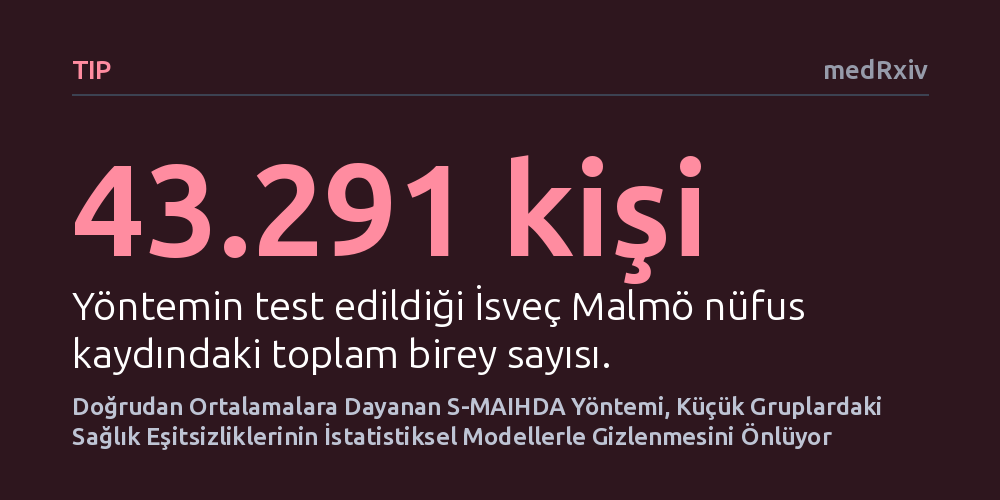

TIP · medRxiv · 2026-10-18
Araştırmacılar, sağlık eşitsizliklerini ölçmede kullanılan karmaşık modellerin küçük gruplardaki farklılıkları yapay biçimde törpüleyip gizlediğini gösterdi. Buna alternatif geliştirilen ve doğrudan gözlem verilerine dayanan Basit Ortalamalar MAIHDA yöntemi, dağılım varsayımı yapmadan eşitsizlikleri ve belirsizliği çarpıtmadan ortaya koyuyor.
Sağlık politikalarında kullanılan karmaşık istatistiksel modellerin kırılgan ve azınlık grupların yaşadığı eşitsizlikleri görünmez kılabileceğini, bu nedenle en yalın gözlem verilerine başvurmanın hayati olduğunu gösterir.

Toplumda sağlık hizmetlerine erişim ve hastalık yükü herkes için aynı değildir. Bireylerin yaşadıkları mahalleler, gelir düzeyleri veya eğitim durumları bu eşitsizliklerin derinleşmesinde belirleyici rol oynar. Halk sağlığı araştırmacıları bu farklılıkları tespit edebilmek için uzun süredir çok düzeyli istatistiksel modellerden yararlanıyor. Ancak günümüzde en yaygın kullanılan rassal etkiler modeli (RE-MAIHDA), küçük gruplardaki oranları genel toplum ortalamasına doğru çeken bir yapıya sahiptir. "Daralma" (shrinkage) adı verilen bu matematiksel mekanizma, örneklem sayısı az olan kırılgan gruplardaki aşırı durumları gürültü kabul edip ortalamaya yaklaştırır. Sonuçta, araştırmanın asıl hedefi olan derin sağlık eşitsizlikleri istatistiksel modellerin içinde kaybolup gider.
Bu durum, özellikle azınlıkların veya dar gelirli küçük toplulukların yaşadığı sağlık sorunlarının gözden kaçmasına yol açar. Risk altında olan küçük bir grup, modelleme sonrasında kağıt üzerinde ortalama bir tablo sergiliyormuş gibi görünebilir. Dolayısıyla kamu sağlığı politikaları tasarlanırken en çok desteğe ihtiyaç duyan kesimler hak ettikleri kaynaklara ulaşamaz. Ortadaki temel problem, sağlık alanındaki adaletsizlikleri bu tür yapay matematiksel filtreler arkasına saklamadan, sahadaki gerçek haliyle nasıl haritalandırabileceğimizdir.
Araştırmacılar, karmaşık modellerin yarattığı bu bilgi kaybını önlemek amacıyla "Basit Ortalamalar MAIHDA" (S-MAIHDA) adını verdikleri yeni bir yaklaşım önerdi. Bu yöntem, verilerin önceden belirlenmiş teorik bir çan eğrisine veya dağılım kuralına uymasını beklemez. Bunun yerine, her bir coğrafi ve sosyodemografik tabakadaki oranı, o tabakada fiilen gözlemlenen bireyler üzerinden doğrudan hesaplar. İncelenen gruptaki kişi sayısı ne kadar az olursa olsun hesaplanan oranlar tarafsız kalır ve güven aralıkları mevcut belirsizliği açıkça yansıtır. Üstelik analiz için kişisel verilerin paylaşılması gerekmez; yalnızca gruplara ait toplam sayı tabloları yeterlidir.
Geliştirilen bu yöntemin geçerliliğini sınamak için İsveç'in Malmö kentinin 2006 yılı resmi nüfus kayıtları incelendi. Çalışmada 43.291 birey, yaşadıkları mahalleler ve sosyodemografik özellikleri dikkate alınarak 300 farklı kesişim tabakasına ayrıldı. Araştırma ekibi, yöntemin gücünü test etmek için birbirine taban tabana zıt iki farklı sağlık çıktısını seçti: Biri daha çok kişisel özelliklere bağlı olması beklenen psikotrop ilaç kullanımı, diğeri ise yaşanılan yerleşim yerinin doğrudan etkileyebileceği özel aile hekimi seçimiydi.
Elde edilen sonuçlar, geliştirilen yöntemin iki sağlık çıktısı arasındaki yapısal farkı net bir şekilde ayrıştırdığını kanıtladı. Psikotrop ilaç kullanımındaki eşitsizliklerin neredeyse tamamen bireysel sosyodemografik özelliklerden kaynaklandığı ve mahalleler arasında dikkate değer bir değişim göstermediği görüldü. Bu çıktıda coğrafi konumun payı oldukça sınırlı kaldı; mahalle düzeyindeki varyans bölüşüm katsayısı yaklaşık yüzde 4, bağlamsal ayırt edicilik gücü yaklaşık yüzde 63 olarak hesaplandı ve eşitsizliklerin mahalleler arası değişimi neredeyse sıfır çıktı.
Buna karşın, özel aile hekimi tercihi çok güçlü bir coğrafi kutuplaşma sergiledi. Bireylerin özel hekime yönelmesi, oturdukları mahallenin sunduğu olanaklarla doğrudan ilişkiliydi. Makalede geliştirilen karşılaştırma testi, geleneksel rassal etkiler modelinin bu tabakaları ortalamaya doğru nasıl sürüklediğini ve küçük gruplardaki özgül riskleri nasıl bastırdığını sayısal olarak ortaya koydu. Basit ortalamalar yaklaşımı, küçük tabakaların özgünlüğünü koruyarak risk farklarını şeffaf bir olasılık ölçeğinde sundu.
Bu çalışmanın ortaya koyduğu bulgular, kamu sağlığı araştırmalarında "daha karmaşık model her zaman daha iyidir" anlayışını sorgulatıyor. Veriyi pürüzsüzleştirmeye çalışan gelişmiş algoritmalar, kırılgan azınlıkların gerçekliğini silikleştirebiliyor. Çalışmanın yazarları durumu makalede şu tespitle özetliyor: "Rassal etkilerdeki daralma, küçük tabakaları genel ortalamaya doğru çeker ve analizin aradığı eşitsizliklerin tam da kendisini gizleyebilir." Bu nedenle araştırmacıların ilk başvurması gereken temel referans, gözlemlenen yalın verinin ta kendisidir.
Geliştirilen S-MAIHDA yönteminin Stata, Python ve R yazılımlarında ücretsiz ve açık kaynak kodlu olarak paylaşılması, yöntemin yaygınlaşmasını kolaylaştıracaktır. Araştırmacılar bireysel hasta mahremiyetini tehlikeye atmadan, toplulaştırılmış sayım tablolarıyla bu analizleri yürütebilir. Sağlık politikası yapıcıları, modellerin varsayımlarıyla törpülenmemiş ham eşitsizlik haritalarına bakarak kaynakları gerçekten ihtiyaç duyan mahallelere ve topluluklara çok daha adil biçimde yönlendirebilir.